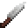

The kitchenKnife and board
Hold use with the knife on the board.
Mortar and bowl
One grinds; the other mixes dough.
Pot and pan
Both cook over a fire.
Heat
A lit campfire (on a trivet), a lit bread oven's hotplate, a lit furnace or smoker, fire or magma.
No heat, no cooking.